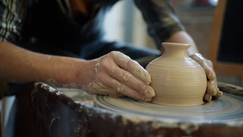

About Us

Welcome to Craft Community Hub! We are dedicated to connecting artisans and craft enthusiasts from all over the world. Our mission is to provide a platform where creativity thrives, and handmade crafts are celebrated. We believe that each craft tells a story and reflects the unique skills of its creator.

At Craft Community Hub, we offer a diverse range of handmade products, from pottery and textiles to jewelry and home decor. Our platform is designed to support local artists by providing them with the visibility they deserve. Whether you're a seasoned artisan or a newcomer, we invite you to join us in celebrating the beauty of craftsmanship!